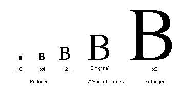
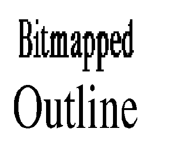
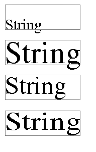
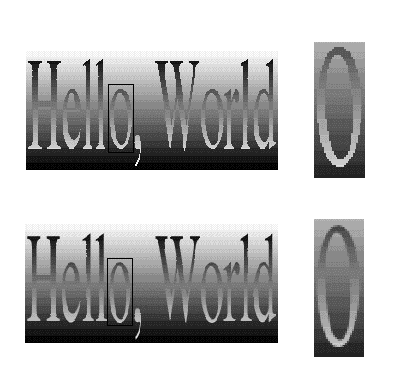
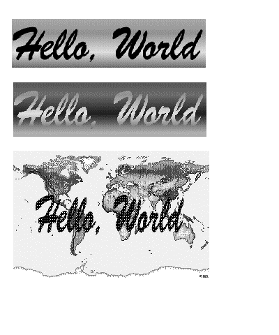
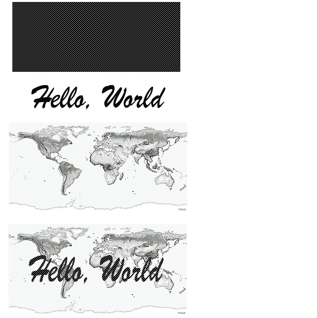
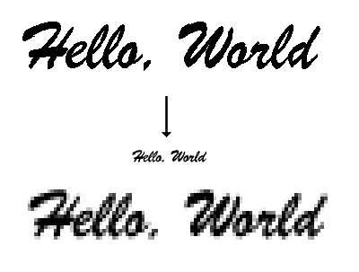

TrueType, Apple's outline font technology, opens up a world of possibilities for
improved handling of text. For example, with outline fonts, users can resize text as
they've always been able to resize other objects in drawing programs--by grabbing
handles and dragging. This article shows how to program this and other exciting
transformations to text.
The Font Manager in System 7.0 can use TrueType outline fonts, in addition to
bitmapped fonts, to produce text on the screen and on a printer. In outline fonts, the
appearance of individual characters is defined by outlines, not bitmaps. The TrueType
font mechanism is also available as an INIT for System 6.0.7 users.
Your application can take advantage of the special capabilities provided by TrueType
fonts to transform text in decorative and useful ways. These transformations include
shrinking or stretching text to fit a given bounding box and creating patterned,
antialiased text. This article provides routines for accomplishing both of these kinds of
transformations. First, though, let's explore in more detail how TrueType fonts differ
from their predecessor, bitmapped fonts.
To understand why TrueType is truly wonderful, you first have to understand the
trouble with bitmapped fonts. With bitmapped fonts, to generate fonts of sizes for
which no bitmap exists, QuickDraw simply picks an available font size according to a
gnarly algorithm and stretches or shrinks the bits. Unfortunately, when a bitmap is
resized the resulting image is often far from pleasing.
This problem is easily understood: imagine you're shrinking a 1-bit image by a factor
of two in the vertical dimension. This means two pixels in the source image combine to
form one pixel in the result. If both source pixels are black or both are white, the
solution is easy. The problem comes when the two source pixels are different. In this
case, since most images on the Macintosh appear on a white background, QuickDraw
preserves black. Thus, if either source pixel is black, the result is black.
QuickDraw uses this same algorithm for larger shrinks. When an image is shrunk
vertically by a factor of eight, if any one of the eight source pixels is black, the
resulting pixel is black. Because there is more information in the source than can be
represented in the destination, the resulting image often looks ragged and is typically
too dark.
A similar problem is encountered when enlarging an image. QuickDraw enlarges
images by replicating pixels; thus, the result becomes blocky. There simply is not
enough information in the source image to provide a better scaled-up representation.
Figure 1 shows a 72-point B in the bitmapped Times® font resized by various
amounts.

Figure 1 Resizing a Bitmapped Character
This problem with resizing has further implications. Have you ever tried to resize
text in the same way you resize other objects in a drawing program like MacDraw®?
If you have, you've discovered that when you move the handles on the bounding box, the
text clipping and formatting change, but the text isn't resized. This inconsistency
between the way text and other objects are handled can be very confusing to users and
may deny them the function they really want: to stretch the text to fill the box. The
reason for this difficulty is--you guessed it! Although resizing an object such as a
rectangle produces excellent results, resizing a bitmapped font results in an image
that is, well, ugly.
Enter TrueType. With TrueType fonts, each character is stored as an outline.
QuickDraw knows the shape of the character, much as it knows the shape of a circle.
When a character is imaged, its outline is scaled to the appropriate size and then filled.
When a character is scaled, the outline is scaled rather than the bits. Thus, an
excellent representation of the character is possible at all scaling factors. Figure 2
shows how an outline font looks when compared to a bitmapped font drawn in a size for
which no bitmap exists.

Figure 2 Bitmapped Versus Outline Font
Because characters maintain their integrity at all sizes in TrueType, it's now possible
to resize text in the same way users have always been able to resize other objects in
drawing programs. We'll show you a routine for doing this. It's also possible to
superimpose a text mask on any picture you want in order to create decorative effects.
We'll also show you how to do this.
To show how easy it is with TrueType to produce high-quality text scaled to given
dimensions, we've written a routine called BoxText that scales a string of text to fit a
given rectangle. It takes a parameter that indicates how the text should be constrained:
vertically, horizontally, both, or neither. Figure 3 shows examples of text treated in
these ways with the BoxText routine.
The BoxText routine is fairly simple. It first checks to see if any constraints are
turned on. The constraints are defined as follows:
typedef enum boxTextOptions {
noConstraints,
constrainH,
constrainV
} boxTextOptions;
Normally, BoxText works just like DrawString. If you pass constraints, the text is
stretched to fit the bounding rectangle's width, or height, or both. This is done through
a call to StdText. The stretching factors are computed from the text's original bounds
and the bounds passed to BoxText.

Unconstrained, Constrained horizontally, Constrained vertically, Constrained both
Figure 3 Text Scaled With the BoxText Routine
void GetTextRect(char* text, Rect* bounds)
{
Point identity;
SetPt(&identity, 1, 1); /* No scaling. */
GetTextBounds(text, identity, identity, bounds);
}
void GetTextBounds(char* text, Point numer, Point denom,
Rect* bounds)
{
FontInfo info;
Fixed hScale = FixDiv(numer.h, denom.h);
Fixed vScale = FixDiv(numer.v, denom.v);
GetFontInfo(&info);
SetRect( bounds, 0, FixMul(-info.ascent, vScale),
FixMul(StringWidth(text), hScale),
FixMul(info.descent + info.leading, vScale) );
OffsetRect(bounds, thePort->pnLoc.h, thePort->pnLoc.v);
}
GetTextRect calls GetTextBounds. GetTextBounds takes a string and scaling factors and
returns the bounding rectangle; note that it calls GetFontInfo to determine the height
and StringWidth to determine the width. GetFontInfo is used instead of OutlineMetrics
since the measurements for the entire font (not just individual characters) are used to
calculate the rectangle for the text. Furthermore, GetFontInfo is faster than
OutlineMetrics.
The bounds are then scaled by the given scaling factors. The ascent is scaled by the
vertical stretching factor to correctly place the text's baseline. Without this
adjustment, the top of the text would not align with the top of the constraining
rectangle. Finally, the rectangle is offset to the current pen location.
When the text is constrained to fit in the rectangle both horizontally and vertically,
the numerator for vertical scaling is set to the height of the rectangle and the
denominator is set to the height of the text. For horizontal scaling, the numerator is
set to the rectangle width and the denominator is set to the string width. Traditionally,
these scaling factors have been stored in point records, and in our routine the code
uses SetPt to set the values. Then MoveTo is called to position the pen at the location
where the text is to be drawn. Finally, the scaled text is drawn using StdText and the
text size is restored.
Note the technique used to call StdText: First the code checks to see whether there are
custom bottlenecks in the current port (as there are when printing). If so (the
grafProcs field is nonzero), the StdText bottleneck routine, rather than the trap, is
called. This is necessary to allow BoxText to print. (Calling the StdText bottleneck is
accomplished via the macro, given for both MPW and THINK C, before the BoxText
routine.)
#ifdef MPW
typedef pascal void (*StdTextProc)(short count, Ptr text,
Point numer, Point denom);
#define STDTEXTPROC(count, text, numer, denom) \
((StdTextProc)thePort->grafProcs->textProc) \
(count, text, numer, denom)
#else /* THINK C version. */
#define STDTEXTPROC(count, text, numer, denom) \
CallPascal(count, text, numer, denom, \
thePort->grafProcs->textProc)
#endif
void BoxText(char* myPString, Rect *dst, boxTextOptions options)
{
Point numer, denom;
short txSize;
Rect src;
if (!(options & (constrainH | constrainV))) {
/* If there are no constraints, just call DrawString. */
MoveTo(dst->left, dst->bottom);
DrawString(myPString);
return;
}
/* Save the current point size. */
txSize = thePort->txSize;
/* Temporarily set the size to something big, so that our
* source rectangle is more precise. This is needed since QD
* doesn't return fixed-point values for ascent, descent, and
* leading. */
TextSize(100);
MoveTo(0, 0);
GetTextRect(myPString, &src);
switch (options) {
case constrainH:
numer.h = numer.v = dst->right - dst->left;
denom.h = denom.v = src.right - src.left;
break;
case constrainV:
numer.h = numer.v = dst->bottom - dst->top;
denom.h = denom.v = src.bottom - src.top;
break;
case (constrainH | constrainV):
/* Constrain both dimensions. */
SetPt(&numer, dst->right - dst->left,
dst->bottom - dst->top);
SetPt(&denom, src.right - src.left,
src.bottom - src.top);
break;
}
if (denom.h && denom.v) {
/* Since we're applying a fixed scale to src.top, a short,
* the result, baseline, is also a short. */
short baseline = FixMul(-src.top, FixDiv(numer.v, denom.v));
MoveTo(dst->left, dst->top + baseline);
/* If there are bottleneck procs installed, call them instead
* of calling the trap directly. */
if (thePort->grafProcs)
STDTEXTPROC(*myPString, myPString+1, numer, denom);
else
StdText(*myPString, myPString+1, numer, denom);
}
TextSize(txSize);
}
In most drawing programs, you change the size of an object by clicking and dragging
with the mouse. This type of interactive resizing is calledrubberbanding since the
borders of the object stretch and shrink like a rubber band. Using the previously
described BoxText routine, it's easy to achieve this result for text.
The following routine, SlowRubberBandText, performs the operation. As you can
probably guess from the routine name, the performance is not optimal. We'll return to
this issue later with the FastRubberBandText routine.
The first thing SlowRubberBandText does is to set the pen mode and text mode to Xor.
Xor mode is used so that drawing and erasing can be accomplished without buffering the
screen contents and thus without using much memory. The drawback is that the text
flickers when it's being resized. A commercial application would check to see if enough
memory is available to buffer the screen contents, and if so would provide
flicker-free resizing.
Next we have a do-while loop that tracks the mouse as long as the button is held down.
On each iteration through the loop, a rectangle is constructed from the anchor point
and the current mouse position. This rectangle is drawn and then BoxText is called to
draw the text scaled to the rectangle.
The do-while loop waits for the mouse to move or for the button to be let up. If either
of these conditions occurs, the text is erased (by being drawn again in the same place).
If the button is let up (the terminating condition on the do-while loop), the routine
exits, returning the bounding rectangle. Otherwise, the text is drawn scaled, using
the new mouse position.
void SlowRubberBandText(char* myPString, Point anchorPoint,
Rect *theRect, boxTextOptions options)
{
Point oldPoint;
Point newPoint;
PenMode(patXor);
TextMode(srcXor);
SetRect(theRect, 0, 0, 0, 0);
do {
GetMouse(&oldPoint);
Pt2Rect(oldPoint, anchorPoint, theRect);
FrameRect(theRect); /* Draw it. */
BoxText(myPString, theRect, options);
newPoint = oldPoint;
while (EqualPt(newPoint, oldPoint) && Button())
GetMouse(&newPoint);
FrameRect(theRect); /* Erase it. */
BoxText(myPString, theRect, options);
} while (Button());
}
While this routine is a simple illustration of the use of BoxText, it's excruciatingly
slow. The reason is that QuickDraw must rerender the outline every time the scaling
changes. The FastRubberBandText routine images the text into a 1-bit off-screen
GWorld, and then uses CopyBits to stretch the resulting bitmap to fit the specified
rectangle. This is similar to the method QuickDraw uses to scale bitmapped fonts,
described previously, and is much faster than the slow case.
The code first allocates a sufficiently large bitmap so that the text looks good even at
large sizes. If the allocation fails in both temporary memory and the application heap,
the code tries smaller rectangles in both heaps. If this also fails, it calls the
SlowRubberBandText routine. If the needed memory is available, GWorld gyrations are
performed to image the text into the off-screen pixMap. Then a do-while loop similar
to the one in the SlowRubberBandText routine is executed, but rather than calling
BoxText, it calls CopyBits. The exit conditions are similar to SlowRubberBandText,
with the addition that the GWorld is disposed of.
void FastRubberBandText(char* myPString, Point p, Rect *theRect,
boxTextOptions constraints)
{
Rect srcRect, dstRect, origRect;
GDHandle oldGD;
GWorldPtr oldGW;
GWorldPtr myOffGWorld;
Point oldPoint;
Point newPoint;
PixMapHandle myPixMapHandle;
short theFont = thePort->txFont;
short theFace = thePort->txFace;
short err;
GetTextRect(myPString, &origRect);
srcRect = origRect;
OffsetRect(&srcRect, -srcRect.left, -srcRect.top);
/* Scale rectangle up by a factor of 8 to get good results when
* resizing bitmap. */
srcRect.right <<= 3;
srcRect.bottom <<= 3;
/* Take a ride on the GWorld allocation loop. Try temporary memory
* first, then the application heap. If both fail, keep trying with
* smaller rectangles until success or until the rectangle is
* smaller than the original rectangle. */
do
if (err = NewGWorld(&myOffGWorld, 1, &srcRect, 0, 0,
useTempMem))
if (err = NewGWorld(&myOffGWorld, 1, &srcRect, 0, 0,
0)) {
srcRect.right >>= 1;
/* Try rectangle smaller by factor of 2. */
srcRect.bottom >>= 1;
}
while (err && srcRect.right >= (origRect.right - origRect.left));
if (!err) {
GetGWorld(&oldGW,&oldGD);
/* Copy font info from current port into GWorld, clear GWorld,
* and draw the text into the GWorld. This leaves a pixMap that
* can be stretched using CopyBits. */
SetGWorld(myOffGWorld, 0);
TextFont(theFont); /* Use font from the current port. */
TextFace(theFace); /* Ditto. */
myPixMapHandle = GetGWorldPixMap(myOffGWorld);
LockPixels(myPixMapHandle);
EraseRect(&srcRect);
BoxText(myPString, &srcRect, constraints);
/* Back to old GWorld for drawing. */
SetGWorld(oldGW, oldGD);
PenMode(patXor);
TextMode(srcXor);
do {
GetMouse(&oldPoint);
Pt2Rect(oldPoint, p, &dstRect);
ConstrainRect(&srcRect, &dstRect, theRect,
constraints);
FrameRect(&dstRect); /* Draw the text scaled to
* fit in the rectangle. */
CopyBits(*myPixMapHandle, &thePort->portBits,
&srcRect, theRect, srcXor, 0);
newPoint = oldPoint;
while (EqualPt(newPoint, oldPoint) && Button())
GetMouse(&newPoint);
FrameRect(&dstRect); /* Erase the text. */
CopyBits(*myPixMapHandle, &thePort->portBits,
&srcRect, theRect, srcXor, 0);
} while (Button());
UnlockPixels(myPixMapHandle);
DisposeGWorld(myOffGWorld);
}
else
/* If GWorld allocation fails, use the slow version, which doesn't
* require a GWorld. */
SlowRubberBandText(myPString, p, theRect, constraints);
}
The FastRubberBandText routine calls ConstrainRect, which mirrors the scaling
performed by BoxText. The routine scales the source rectangle to fit inside the
destination rectangle with regard to constraints.
void ConstrainRect(Rect* src, Rect* dst, Rect* result,
boxTextOptions constraints)
{
Fixed ratio;
*result = *dst;
switch (constraints) {
case constrainH:
ratio = FixDiv(src->bottom - src->top,
src->right - src->left);
result->bottom = dst->top +
FixMul(dst->right - dst->left, ratio);
break;
case constrainV:
ratio = FixDiv(src->right - src->left,
src->bottom - src->top);
result->right = dst->left +
FixMul(dst->bottom - dst->top, ratio);
break;
}
}
Generation of high-quality scaled text is only one of the fun tricks of the new outline
fonts in System 7.0. You can also create patterned, antialiased text with just a few
lines of code. (Antialiased text is text whose edges have been smoothed by the addition
of gray, creating a softer effect; see Figure 4, and see the antialiased version in color
on the inside front cover of this issue.) The possibilities this opens up for writing a
"Hello, World" program are staggering, as illustrated in Figure 5.

Figure 4 Regular Versus Antialiased Text

Figure 5 How "Hello, World" Looks in 1991
To achieve this result you use the CopyDeepMask call (available only in System 7.0).
Your application generates a source pixMap with the pattern or picture you want to
use; the CreateTextMask routine creates a GWorld containing the text mask; and
finally, you call CopyDeepMask to image the source through the mask onto the
destination. Figure 6 illustrates this.
GENERATING THE MASK
The CreateTextMask routine works as follows: First, we attempt to allocate a GWorld
that would allow text to be rendered at four times its final size. (If there's not enough
memory in the application heap or temporary memory to allocate a GWorld this big,
GWorlds of three times and then two times the final size are created. If all of these
attempts fail, nil is returned.) Next the 1-bit GWorld is cleared to white and the text
is imaged into it scaled by a factor of four (or whatever multiple the 1- bit GWorld
turned out to be) in each direction. Then CopyBits with mode ditherCopy is used to
shrink the large 1-bit GWorld to a 4-bit gray-scale GWorld; this is illustrated in
Figure 7.
Because the mask will consist only of grays, the 4-bit GWorld is given a gray-scale
CLUT. We are now finished with the 1-bit GWorld and dispose of it. The 4-bit
gray-scale image we just created is returned by CreateTextMask. Notice that this
routine may return a GWorld allocated in temporary memory, so you must dispose of
the GWorld before calling WaitNextEvent.

Figure 6 Using CopyDeepMask

Figure 7 Shrinking the Mask With ditherCopy
GWorldPtr CreateTextMask(char* text, Rect* myRect,
boxTextOptions options)
{
PixMapHandle bigPixMap;
GDHandle oldGD;
GWorldPtr oldGW, maskWorld, bigWorld;
short theFont = thePort->txFont;
short theFace = thePort->txFace;
Rect myRectBig;
/* Create the 4-bit maskWorld. */
{ CTabHandle ctab = GetCTable(4+32);
if (NewGWorld(&maskWorld, 4, myRect, ctab, 0,
useTempMem) != noErr)
if ((NewGWorld(&maskWorld, 4, myRect, ctab, 0,
0) != noErr)) {
DisposHandle(ctab);
return 0;
}
}
/* Create the supersample bigWorld. First try to use a GWorld 4
* times larger. If that fails, try 3 and 2 times larger. If all
* attempts fail, return a nil GWorld. */
{ short zoom = 4;
short width = myRect->right-myRect->left;
short height = myRect->bottom-myRect->top;
do {
SetRect(&myRectBig, 0, 0, width * zoom, height * zoom);
if (NewGWorld(&bigWorld, 1, &myRectBig, 0, 0,
useTempMem) == noErr)
break;
else
if (NewGWorld(&bigWorld, 1, &myRectBig, 0, 0,
0) == noErr)
break;
zoom--;
} while (zoom > 1);
if (zoom == 1) {
DisposeGWorld(maskWorld);
return 0;
}
}
/* Draw the text into supersample bigWorld. */
GetGWorld(&oldGW, &oldGD);
SetGWorld(bigWorld, 0);
TextFont(theFont);
TextFace(theFace);
LockPixels(bigPixMap = GetGWorldPixMap(bigWorld));
EraseRect(&myRectBig);
BoxText(text, &myRectBig, options);
/* Create 4-bit maskWorld by shrinking the big GWorld (with
* ditherCopy) into the 4-bit gray-scale GWorld. NOTE: This is one of
* the slowest steps, and is relatively easy to optimize with a
* custom shrinking procedure. */
{ PixMapHandle maskPixMap = GetGWorldPixMap(maskWorld);
LockPixels(maskPixMap);
SetGWorld(maskWorld, 0);
CopyBits(*bigPixMap, *maskPixMap, &myRectBig, myRect,
ditherCopy+srcCopy, 0L);
UnlockPixels(maskPixMap);
}
DisposeGWorld(bigWorld);
SetGWorld(oldGW, oldGD);
return maskWorld;
}
SAYING "HELLO, WORLD"
Now we're ready to say "Hello, World" in patterned, antialiased text as shown in
Figure 4. The following routine combines the BoxText, FastRubberBandText, and
CreateTextMask routines to produce its results. In this example, the source pixMap
contains a picture that's read in from a resource file. This pixMap could, of course,
contain anything, and that image would peek through the text mask. The interesting
thing to notice is that if you scale the source picture to the size of the text, the image
behind each letter will stay the same regardless of the scaling factor.
void JustShowOff(Point anchorPt)
{
#define kBoxOptions constrainH | constrainV
Rect myRect;
GWorldPtr mask = 0;
char *text = "\pHello, World";
FastRubberBandText(text, anchorPt, &myRect, kBoxOptions);
if (mask = CreateTextMask(text, &myRect, kBoxOptions)) {
GWorldPtr oldGW;
GWorldPtr src;
PicHandle pic;
PixMapHandle maskBits;
PixMapHandle srcbits;
GDHandle oldGD;
if (NewGWorld(&src, 8, &myRect, 0, 0,
useTempMem) != noErr)
if (NewGWorld(&src, 8, &myRect, 0, 0, 0) != noErr)
goto EXIT;
if (!(pic = GetPicture(1001))) /* Assumes the PICT is marked
* purgeable. */
goto EXIT;
GetGWorld(&oldGW, &oldGD);
SetGWorld(src, 0); /* Set to draw into
* off-screen 8-bit. */
DrawPicture(pic, &myRect); /* Stretch picture to fill
* user's rect. */
LockPixels(maskBits = GetGWorldPixMap(mask));
LockPixels(srcBits = GetGWorldPixMap(src));
SetGWorld(oldGW, oldGD);
CopyDeepMask(*srcBits, *maskBits, &thePort->portBits,
&myRect, &myRect, &myRect, srcCopy, 0L);
DisposeGWorld(src);
}
EXIT:
if (mask) DisposeGWorld(mask);
}
TrueType fonts provide high-quality characters at all sizes and scaling factors. This is
possible because TrueType fonts are stored as outlines rather than bitmaps, and
scaling an outline produces much better results than scaling a bitmap. The BoxText
routine described in this article uses the StdText call to stretch text to fit within a
specified box. A logical extension of this could solve a problem that has plagued
humankind (or at least high school students): how to expand six and a half pages of text
to produce a report that's exactly ten pages long, as required by law or a high school
teacher.
Usually tactics such as adjusting the margins, line spacing, and font size can get you
close. But this trial-and-error process could easily be replaced with a procedure
written by some enterprising and humanitarian programmer:
FitTextToPages(char *text, long numPages);
Rather than simply adjusting the margins and line spacing, this routine could
uniformly stretch a block of text to fill the desired number of pages.
System 7.0 also allows applications to pass a deep mask to CopyMask or
CopyDeepMask. By imaging text into a large bitmap and then scaling it down with
ditherCopy, it's possible to generate a soft- edged mask for producing antialiased text.
Furthermore, text drawn using CopyDeepMask can have any image as the source
pixMap, making it easy to produce patterned or picture text.
In the process of producing all of these great effects with text, we used GWorlds
extensively. From the code samples it should be clear that GWorlds are extremely
simple to create and manipulate. Judicious use of temporary memory for holding
GWorlds allows our sample "Hello, World" program to run in a 100K heap and still
produce very large (bigger than 1200 x 500 pixels) scaled text (provided there's
enough temporary memory available, of course).
Enjoy!
KONSTANTIN OTHMER AND MIKE REED Have you seen these two guys?
Konstantin and Mike, better known as Jake and Elwood, were last seen driving an old
Black & White to the Palace Hotel Ballroom where they performed such hits as
"Everybody Needs Some PixMaps to CopyBits" and "Gimme Some TrueType."
Frequented hangouts: kitchen after lunch meetings, football field, poker tables,slopes
at Tahoe, beach, Fitness Center, center stage. Known contacts: Bruce "Second Hand"
Leak, Dave "Know" Good. Distinguishing marks: gym bag, running shoes, soft-edged
clip art, smooth text forms. Latest fortune cookie: Ask and you shall receive; this
includes trouble. Any information as to the whereabouts of these rascals should be sent
to their managers, who are probably looking for them. *
Note that the fonts shown in the illustrations are drawn at screen resolution, so
they don't look as good as they would if drawn on a higher-resolution device such as a
printer. *
The example code shown here was written in THINK C. The Developer Essentials
disc contains both THINK C and MPW ®versions. *
The antialiasing technique used in this article requires a
multiple-bits-per-pixel destination device. Since most printers are 1 bit per pixel,
these antialiasing techniques are useful primarily for the screen. A second problem
with printing antialiased text using these techniques is that QuickDraw does not pass
the CopyDeepMask call to printer drivers. For multiple-bits-per- pixel printers,
you could image the antialiased text into a GWorld and then use CopyBits to draw the
image on a printer. *
For details on using CopyBits with ditherCopy, see "QuickDraw's CopyBits
Procedure" in develop, Issue 6. *
Thanks to Our Technical Reviewers Pete "Luke" Alexander, John Harvey, Bryan
"Beaker" Ressler *